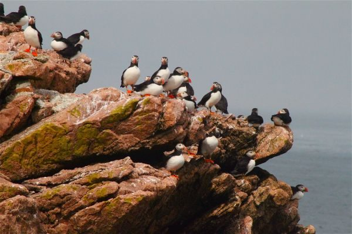
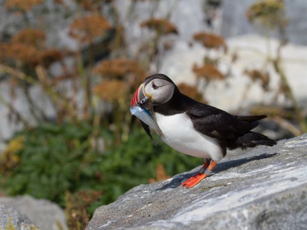
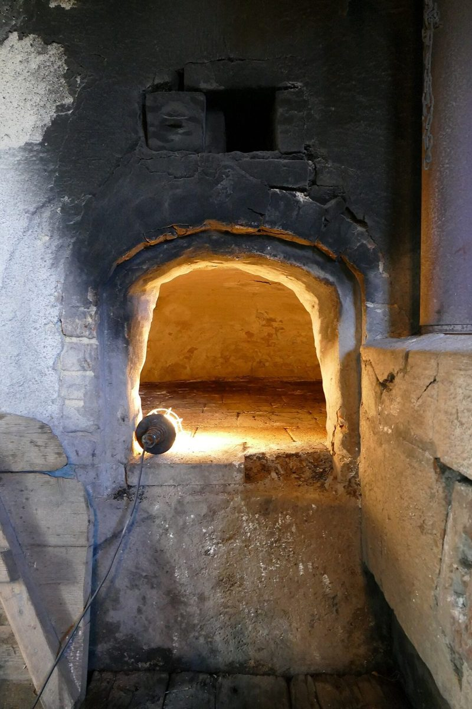

店のこと
店のこと
お店について確認できているのは、所在地・電話番号・Instagramのアカウントです。
このページの「想像してみる」部分は、制作側が想像して書いたものです。お店の実際の様子・考え・メニューとは関係がありません。
確認できていること
- 店名は「Bakery Puffin」、業種はパン屋・ベーカリー
- 所在地は兵庫県加古川市尾上町長田５１７−１０５(〒675-0024)
- 電話番号は079-490-3236
- Instagramは @puffin_bakery
- 営業時間・定休日・メニュー・価格・ご予約・駐車場は準備中
想像してみる
名前の「Puffin」から
由来は分かりません。制作側は、愛らしい海鳥の名前から、親しみやすい響きのお店かもしれないと想像しました。くちばしが灰青・黄・朱の三色に見えることから、このサイトの配色も三色にしています(実際のお店の姿ではありません)。


